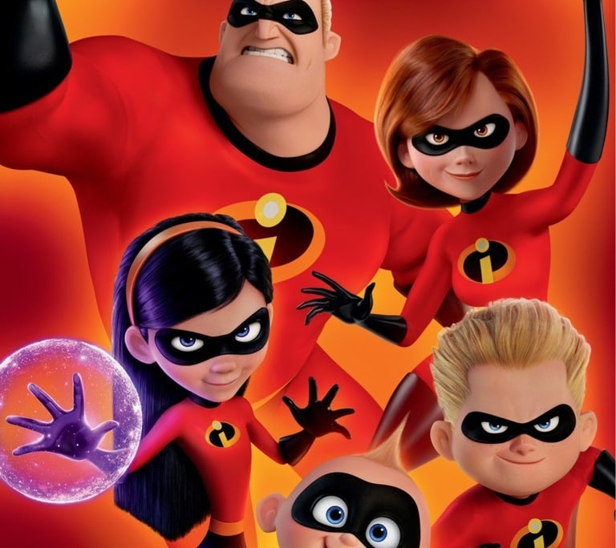

Los Increíbles
Han pasado ya 14 años desde que Los Increíbles DE Disney Pixar se colaron en nuestras vidas dejando una secuela que ya se puede ver en los cones.
Personajes principales
- Helen Parr
- Bob Parr
- Jack-JAck Parr
- Violeta Parr
- Dashiell Parr
- Edna Moda
- Lucio
Descripcion de los personajes
| Año | Personaje | Descripcion |
|---|---|---|
| 2004 | Helen Parr | más conocida como Elastigirl en el mundillo de los Super, cuelga su supertraje para formar una familia junto a su marido Bob, dejando atrás sus días como luchadora contra el crimen. Pero cuando le proponen liderar una campaña para que resurjan los Supers, descubre que todavía sabe como doblarse, estirarse y retorcerse para resolver los misterios más peliagudos. |
| 2004 | Bob Parr | el famoso héroe con la superfuerza y el poder para deshacerse de los malos él solito. Desde que se ilegalizaron los Supers, Bob ha estado decaído casi todo el tiempo, encargándose de la familia junto a su esposa Helen. Pero cuando a ella le piden que retome la lucha contra el crimen para tratar de mejorar la opinión pública sobre los Supers, Bob se ve obligado a encargarse de las tareas del hogar sin su ayuda, lo que requiere una serie de superpoderes completamente diferentes a los que él posee. |
| 2004 | Jack-JAck Parr | el más pequeño de la familia, le encanta quedarse sentadito con su biberón mientras le leen un cuento. Con gran talento para el balbuceo y eespecialista en lanzar comida, Jack-Jack parece un bebé normal, pero podría resultar ser el miembro más poderoso de los Parr. |
| Estos personajes fueron los famos de la tierra. | ||